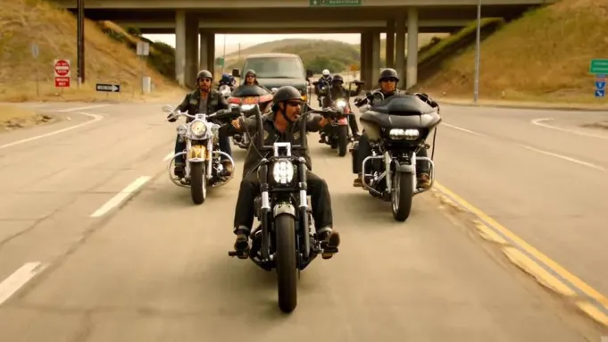

Mayans MC est un club de motards fictif dans la série télévisée du même nom, créée par Kurt Sutter et Elgin James. La série est un spin-off de la série télévisée à succès "Sons of Anarchy" et suit les événements qui se déroulent après la fin de cette dernière. Le club Mayans MC est basé dans la ville fictive de Santo Padre, en Californie, et est composé de membres d'origine latine. Leur activité principale est le trafic de drogue et la protection de leur territoire contre les gangs rivaux et les autorités locales. Cependant, contrairement à d'autres clubs de motards, les Mayans MC ont également des liens étroits avec les cartels de la drogue mexicains et sont souvent impliqués dans des activités criminelles transfrontalières. Le fondateur et président original des Mayans MC était Marcus Alvarez, mais au début de la série, il est remplacé par Obispo "Bishop" Losa. Le club est organisé en chapitres, avec des membres dans toute la Californie et dans d'autres États. Chaque chapitre est dirigé par un vice-président et est responsable de ses propres opérations.
Marcus Alvarez est le leader des "Mayans MC". Il est joué par l'acteur Emilio Rivera. Alvarez est un personnage récurrent dans la série "Sons of Anarchy" et est également présent dans le spin-off "Mayans MC". Il est présenté comme un personnage respecté et craint, qui maintient un équilibre délicat entre les intérêts de son club et ceux des autres groupes criminels avec lesquels il travaille. Alvarez est un personnage complexe et souvent ambigu, qui peut être à la fois un ennemi et un allié pour les membres de SAMCRO. Au fil de la série, il est impliqué dans des activités criminelles telles que le trafic de drogue et les enlèvements, mais il montre aussi des signes d'empathie et de loyauté envers ses proches.
Il est joué par l'acteur Michael Irby. Bishop est un personnage impitoyable qui a une grande ambition pour son club. Il est déterminé à étendre leur territoire et à augmenter leur pouvoir dans le monde du crime organisé. Bishop a également une relation compliquée avec EZ Reyes, un autre personnage principal de la série, qui a été recruté par les Mayans après avoir été libéré de prison. Au fil de la série, Bishop est confronté à des défis importants, notamment la rivalité avec d'autres clubs de motards et les conflits internes au sein des Mayans.
Hank 'Tranq' Loza est un membre des "Mayans MC". Il est joué par l'acteur Frank Lozoya. Tranq est un personnage relativement mineur dans la série, mais il est souvent vu aux côtés de Creeper et d'autres membres des Mayans. Il est considéré comme un membre fidèle et est souvent impliqué dans des activités criminelles menées par les Mayans. Tranq est également connu pour sa propension à prendre des drogues et de l'alcool, ce qui le met parfois en danger.
Creeper est un membre des "Mayans MC". Il est joué par l'acteur Joseph Lucero. Creeper est un personnage excentrique qui est souvent vu avec un sourire sur le visage. Il est également un tireur d'élite habile et un membre important de l'équipe de sécurité des Mayans. Creeper est très loyalement envers son club et est prêt à faire tout ce qu'il faut pour les protéger. Au fil de la série, il est impliqué dans des activités criminelles telles que le trafic de drogue et les enlèvements, mais il montre aussi une certaine humanité et un sens de l'humour.
Ezequiel "EZ" Reyes est le personnage principal de la série "Mayans MC". Il est joué par l'acteur JD Pardo. EZ est un ancien détenu qui a été recruté par les "Mayans MC" à sa sortie de prison. Il est intelligent, déterminé et a un sens aigu de la justice. EZ est également hanté par son passé criminel et les traumatismes qu'il a subis en prison. Au fil de la série, EZ est impliqué dans des activités criminelles, mais il essaie aussi de se racheter en faisant le bien pour sa communauté. EZ est également impliqué dans une relation compliquée avec Gaby, la fille d'un chef de cartel mexicain, ce qui ajoute à la complexité de son personnage.
Angel Reyes est un membre important des "Mayans MC". Il est joué par l'acteur Clayton Cardenas. Angel est le frère aîné d'EZ et un membre respecté des Mayans. Il est considéré comme un membre sage et réfléchi, souvent appelé à aider à résoudre les problèmes au sein du club. Angel est également connu pour sa loyauté envers sa famille et son club, et il est prêt à risquer sa vie pour les protéger. Au fil de la série, Angel est impliqué dans des activités criminelles, mais il montre aussi un certain niveau de moralité et essaie de trouver un équilibre entre ses obligations au sein des Mayans et son propre code de conduite.
Coco est un membre des "Mayans MC" dans la série du même nom. Il est joué par l'acteur Richard Cabral. Coco est un personnage complexe, qui a un côté sombre et violent, mais qui peut aussi être drôle et sarcastique. Il est connu pour son amour pour les armes et sa capacité à obtenir des armes pour le club. Coco est également très loyal envers les Mayans et il est prêt à faire ce qu'il faut pour protéger le club et ses membres. Tout au long de la série, Coco est impliqué dans des activités criminelles, mais il montre aussi des moments de remise en question et de réflexion sur ses actions.
Gilberto 'Gilly' Lopez est un membre des "Mayans MC" dans la série du même nom. Il est joué par l'acteur Vincent Rocco Vargas. Gilly est un personnage secondaire mais important car il est l'un des membres les plus loyaux du club. Il est toujours prêt à aider les autres membres et à suivre les ordres du président du club, Bishop.
Taza est un personnage récurrent dans la série "Mayans MC", joué par l'acteur Raoul Max Trujillo. Il est membre des Mayans MC, basé à Santo Padre. Taza est un personnage loyal envers le club et ses membres, mais il est souvent en désaccord avec le président du club, Bishop. Il a également une relation tendue avec les membres de l'IRA, avec lesquels les Mayans ont des liens. Malgré cela, Taza est un membre respecté des Mayans, grâce à ses compétences en matière de sécurité et son dévouement envers le club.